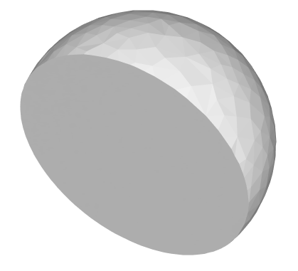
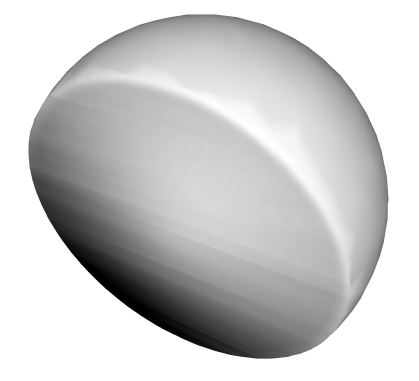

softenNormals operation
Syntax
softenNormals(angle)
Parameters
- angle (float)
For each vertex, use the average of the adjacent face normals. Edges where face normals meet at an angle greater than or equal as specified are shaded as hard edges. Setting an angle of- 0 degrees is equivalent to setNormals(hard),
- 30 degrees is equivalent to setNormals(auto) and
- 180 degrees is equivalent to setNormals(soft).
Disconnected shapes must be combined and duplicate vertices must be merged in order to compute vertex normals using adjacent face normals.
Description
The softenNormals() operation sets the normals of the current shapes' geometry to the desired mode.
Related
- setNormals operation
- cleanupGeometry operation
- convexify operation
- innerRectangle operation
- mirror operation
- reduceGeometry operation
- reverseNormals operation
Examples
Shaded Hemisphere
|

|
|

|
Copyright ©2008-2025 Esri R&D Center Zurich. All rights reserved.